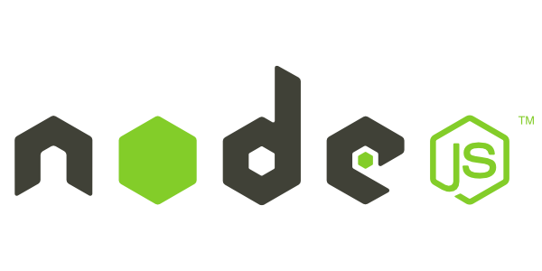
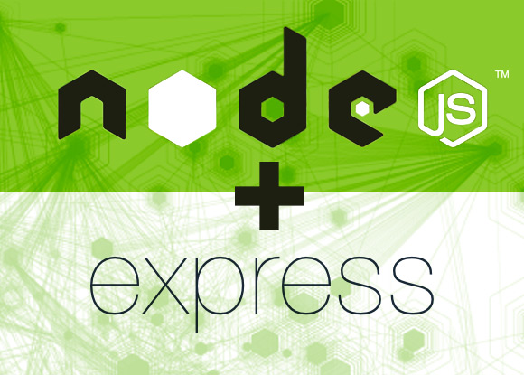

# #
This is where you can find all the labs for Web App Development.
We will be covering the MEAN Software Stack which essentially covers Mongo, Express, Angular and Node when developing web applications in the context of developing a RESTful Web Service for an Android App Donation.
The labs will begin with a simple Node Web Server built using Express and progress on to a fully fledged MEAN web app, with an Angular Front End.
You can check out the completed web app connected to a mongodb database hosted on mongolab deployed to heroku here http://donationweb-4-0.herokuapp.com.
Before you attempt any of the labs, Make sure you have the WebStorm IDE installed and configured. If you want to go 'old school' I'd recommend downloading and installing sublimetext to use as your JS editor - you can use any text editor you like, but I'll be using WebStorm for all the labs.
You can visit the live site at donationweb.herokuapp.com, to get an idea of what you'll be developing throughout the labs.
The first thing to do is go to the official JetBrains resources and get yourself an educational licensed version of their WebStorm IDE.
You can find the download link here and the Student License application form here.
Don't forget to activate your subscription with your JetBrains account (and not an activation code or license server)
We'll look at the IDE (and its features) in detail as we work through the labs.

Instaling NodeJS is pretty much essential for any modern web development, so if you haven't got it installed already, you can install it (and the Node Package Manager npm) here.
There's also some useful info here - Installing Node.js and updating npm.

Before you install express, make sure you have node and npm installed already.
Go to the command line and type the following
npm install -g expressThat's it - you now have express installed! (globally (-g) )
It's probably worth installing the generator package as well
npm install -g express-generatorif you type
npm install -g express --savewithin your project folder, it will add express to your dependencies (but we'll cover that later on).
To install mongodb go to the official site and follow the instructions for your particular environment here.
We won't be using a mongodb database until the last part of the module, but it's worth having it installed and setup before we actually need it.
Visit the official Angular JS resources and set up your development environment as instructed.
You can find nearly everything you need here but you won't need to install Grunt or Bower for what we'll be doing in the labs (though you might need them for other modules you're taking).
I'd also recommend installing SourceTree and setting up either a bitbucket (my personal favourite!) or GitHub account (if you haven't got one already) to manage versioning control of all your labs.
Once you have SourceTree installed, you can easily set up a local git repository and sync it up remotely with you bitbucket account as described here. It's probably best to set it up from the command line first and then just 'drag-n-drop' your folder onto the SourceTree app - and you're done!